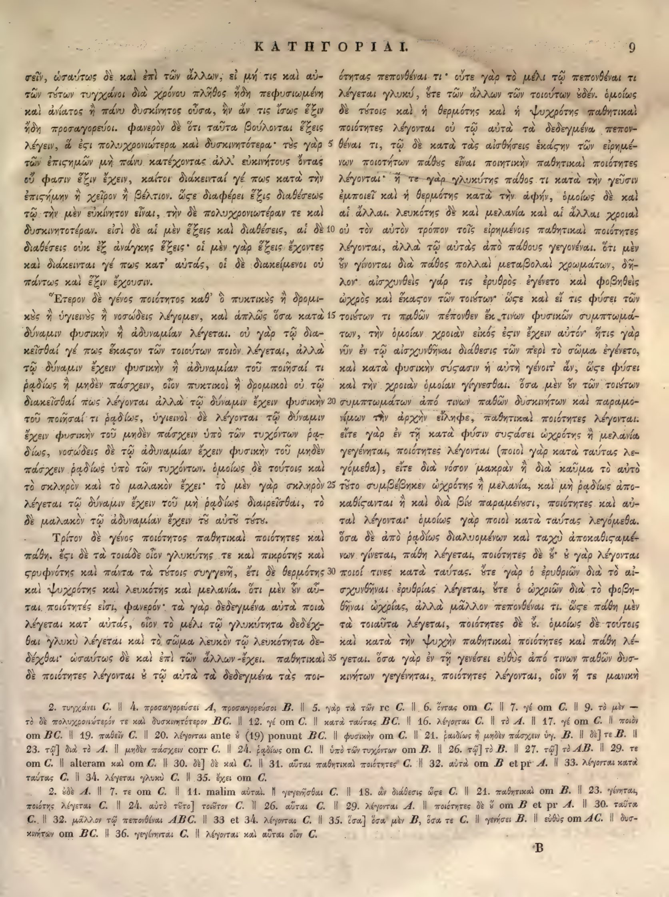

9a
| 1 | σεῖν, ὡσαύτως δὲ καὶ ἐπὶ τῶν ἄλλων, εἰ μή τις καὶ αὐ- | 0.95 |
|---|---|---|
| 2 | τῶν τέχνων τυγχάνοι διὰ χρόνου πλῆθος ἤδη πεφυσιωμένη | 0.90 |
| 3 | καὶ ἀνίατος ἢ πάνυ δυσκίνητος οὖσα, ἣν ἄν τις ἴσως ἔξιν | 0.90 |
| 4 | ἤδη προσαγορεύοι. φανερὸν δὲ ὅτι ταῦτα βούλεται ἔξεις | 0.90 |
| 5 | λέγειν, ἃ ἐστι πολυχρονιώτερα καὶ δυσκινητότερα· τὰς γὰρ | 0.90 |
| 6 | τῶν ἐπιστημῶν μὴ πάνυ κατέχοντας ἀλλ’ εὐκινήτους ὄντας | 0.90 |
| 7 | οὐ φασιν ἔξιν ἔχειν, καίτοι διάκεινταί γέ πως κατὰ τὴν | 0.90 |
| 8 | ἐπιστήμην ἢ χεῖρον ἢ βέλτιον. ὥστε διαφέρει ἕξις διαθέσεως | 0.90 |
| 9 | τῷ τὴν μὲν εὐκίνητον εἶναι, τὴν δὲ πολυχρονιωτέραν τε καὶ | 0.90 |
| 10 | δυσκινητοτέραν. εἰσὶ δὲ αἱ μὲν ἕξεις καὶ διαθέσεις, αἱ δὲ | 0.90 |
| 11 | διαθέσεις οὐκ ἐξ ἀνάγκης ἕξεις· οἱ μὲν γὰρ ἕξεις ἔχοντες | 0.90 |
| 12 | καὶ διάκεινταί γέ πως κατ’ αὐτάς, οἱ δὲ διακείμενοι οὐ | 0.90 |
| 13 | πάντως καὶ ἕξιν ἔχουσιν. | 0.90 |
| 14 | Ἕτερον δὲ γένος ποιότητος καθ’ ὃ πυκτικὸς ἢ δρομι- | 0.90 |
| 15 | κὸς ἢ ὑγιεινὸς ἢ νοσώδεις λέγομεν, καὶ ἁπλῶς ὅσα κατὰ | 0.90 |
| 16 | δύναμιν φυσικὴν ἢ ἀδυναμίαν λέγεται. οὐ γὰρ τῷ δια- | 0.90 |
| 17 | κεῖσθαί γέ πως ἕκαστον τῶν τοιούτων ποιὸν λέγεται, ἀλλὰ | 0.90 |
| 18 | τῷ δύναμιν ἔχειν φυσικὴν ἢ ἀδυναμίαν τοῦ ποιῆσαί τι | 0.90 |
| 19 | ῥᾳδίως ἢ μηδὲν πάσχειν, οἷον πυκτικοὶ ἢ δρομικοὶ οὐ τῷ | 0.90 |
| 20 | διακεῖσθαί πως λέγονται ἀλλὰ τῷ δύναμιν ἔχειν φυσικὴν | 0.90 |
| 21 | τοῦ ποιῆσαί τι ῥᾳδίως, ὑγιεινοὶ δὲ λέγονται τῷ δύναμιν | 0.90 |
| 22 | ἔχειν φυσικὴν τοῦ μηδὲν πάσχειν ὑπὸ τῶν τυχόντων ῥᾳ- | 0.90 |
| 23 | δίως, νοσώδεις δὲ τῷ ἀδυναμίαν ἔχειν φυσικὴν τοῦ μηδὲν | 0.90 |
| 24 | πάσχειν ῥᾳδίως ὑπὸ τῶν τυχόντων. ὁμοίως δὲ τούτοις καὶ | 0.90 |
| 25 | τὸ σκληρὸν καὶ τὸ μαλακὸν ἔχει· τὸ μὲν γὰρ σκληρὸν | 0.90 |
| 26 | λέγεται τῷ δύναμιν ἔχειν τοῦ μὴ ῥᾳδίως διαιρεῖσθαι, τὸ | 0.90 |
| 27 | δὲ μαλακὸν τῷ ἀδυναμίαν ἔχειν τοῦ αὐτοῦ τούτου. | 0.90 |
| 28 | Τρίτον δὲ γένος ποιότητος παθητικαὶ ποιότητες καὶ | 0.90 |
| 29 | πάθη. εἰσὶ δὲ αἱ τοιαίδε οἷον γλυκύτης τε καὶ πικρότης καὶ | 0.90 |
| 30 | στρυφνότης καὶ πάντα τὰ τούτοις συγγενῆ, ἔτι δὲ θερμότης | 0.90 |
| 31 | καὶ ψυχρότης καὶ λευκότης καὶ μελανία. ὅτι μὲν οὖν αὗ- | 0.90 |
| 32 | ται ποιότητές εἰσι, φανερόν· τὰ γὰρ δεδεγμένα αὐτὰ ποιὰ | 0.90 |
| 33 | λέγεται κατ’ αὐτάς, οἷον τὸ μέλι τῷ γλυκύτητα δεδέχ- | 0.90 |
| 34 | θαι γλυκὺ λέγεται καὶ τὸ σῶμα λευκὸν τῷ λευκότητα δε- | 0.90 |
| 35 | δέχθαι· ὡσαύτως δὲ καὶ ἐπὶ τῶν ἄλλων ἔχει. παθητικαὶ | 0.90 |
| 36 | δὲ ποιότητες λέγονται ἃ τῷ αὑτὰ τὰ δεδεγμένα τὰς ποι- | 0.90 |
9b
| 1 | ότινας πεπονθέναι τι· οὔτε γὰρ τὸ μέλι τῷ πεπονθέναι τι | 0.95 |
|---|---|---|
| 2 | λέγεται γλυκύ, ὥστε τῶν ἄλλων τῶν τοιούτων οὐδέν. ὁμοίως | 0.95 |
| 3 | δὲ τούτοις καὶ ἡ θερμότης καὶ ἡ ψυχρότης παθητικαὶ | 0.95 |
| 4 | ποιότητες λέγονται οὐ τῷ αὐτὰ τὰ δεδεγμένα πεπον- | 0.95 |
| 5 | θέναι τι, τῷ δὲ κατὰ τὰς αἰσθήσεις <choice><sic>ἑκάςην</sic><corr>ἑκάστην</corr></choice> τῶν εἰρημέ- | 0.95 |
| 6 | νων ποιοτήτων πάθος εἶναι ποιητικὴν παθητικαὶ ποιότητες | 0.95 |
| 7 | λέγονται· ἥ τε γὰρ γλυκύτης πάθος τι κατὰ τὴν γεῦσιν | 0.95 |
| 8 | ἐμποιεῖ καὶ ἡ θερμότης κατὰ τὴν ἁφήν, ὁμοίως δὲ καὶ | 0.95 |
| 9 | αἱ ἄλλαι. λευκότης δὲ καὶ μελανία καὶ αἱ ἄλλαι χροιαὶ | 0.95 |
| 10 | οὐ τὸν αὐτὸν τρόπον τοῖς εἰρημένοις παθητικαὶ ποιότητες | 0.95 |
| 11 | λέγονται, ἀλλὰ τῷ αὐτὰς ἀπὸ πάθους γεγονέναι. ὅτι μὲν | 0.95 |
| 12 | οὖν γίνονται διὰ πάθος πολλαὶ μεταβολαὶ χρωμάτων, δῆ- | 0.95 |
| 13 | λον· αἰσχυνθεὶς γάρ τις ἐρυθρὸς ἐγένετο καὶ φοβηθεὶς | 0.95 |
| 14 | ὠχρός καὶ ἕκαστον τῶν τοιούτων· <choice><sic>ὥςε</sic><corr>ὥστε</corr></choice> καὶ εἴ τις φύσει τῶν | 0.95 |
| 15 | τοιούτων τι παθῶν πέπονθεν ἐκ τινων φυσικῶν συμπτωμά- | 0.95 |
| 16 | των, τὴν ὁμοίαν χροιὰν εἰκός <choice><sic>ἐςιν</sic><corr>ἐστιν</corr></choice> ἔχειν αὐτόν· ἥτις γὰρ | 0.95 |
| 17 | νῦν ἐν τῷ αἰσχυνθῆναι διάθεσις τῶν περὶ τὸ σῶμα ἐγένετο, | 0.95 |
| 18 | καὶ κατὰ φυσικὴν <choice><sic>σύςασιν</sic><corr>σύστασιν</corr></choice> ἡ αὐτὴ γένοιτ' ἄν, <choice><sic>ὥςε</sic><corr>ὥστε</corr></choice> φύσει | 0.95 |
| 19 | καὶ τὴν χροιὰν ὁμοίαν γίγνεσθαι. ὅσα μὲν οὖν τῶν τοιούτων | 0.95 |
| 20 | συμπτωμάτων ἀπό τινων παθῶν δυσκινήτων καὶ παραμό- | 0.95 |
| 21 | νιμον τὴν ἀρχὴν εἴληφε, παθητικαὶ ποιότητες λέγονται· | 0.95 |
| 22 | εἴτε γὰρ ἐν τῇ κατὰ φύσιν <choice><sic>συςάσει</sic><corr>συστάσει</corr></choice> ὠχρότης ἢ μελανία | 0.95 |
| 23 | γεγένηται, ποιότητες λέγονται (ποιοὶ γὰρ κατὰ ταύτας λε- | 0.95 |
| 24 | γόμεθα), εἴτε διὰ νόσον μακρὰν ἢ διὰ καῦμα τὸ αὐτὸ | 0.95 |
| 25 | τοῦτο συμβέβηκεν ὠχρότης ἢ μελανία, καὶ μὴ ῥᾳδίως ἀπο- | 0.95 |
| 26 | <choice><sic>καθίςανται</sic><corr>καθίστανται</corr></choice> ἢ καὶ διὰ βίαν παραμένουσιν, ποιότητες καὶ αὗ- | 0.95 |
| 27 | ται λέγονται· ὁμοίως γὰρ ποιοὶ κατὰ ταύτας λεγόμεθα. | 0.95 |
| 28 | ὅσα δὲ ἀπὸ ῥᾳδίως διαλυομένων καὶ ταχὺ <choice><sic>ἀποκαθιςαμέ</sic><corr>ἀποκαθισταμέ</corr></choice>- | 0.95 |
| 29 | νων γίνεται, πάθη λέγεται, ποιότητες δὲ οὔ· οὐ γὰρ λέγονται | 0.95 |
| 30 | ποιοί τινες κατὰ ταύτας. ὥστε γὰρ ὁ ἐρυθριῶν διὰ τὸ αἰ- | 0.95 |
| 31 | σχυνθῆναι ἐρυθρίας λέγεται, ὥστε ὁ ὠχριῶν διὰ τὸ φοβη- | 0.95 |
| 32 | θῆναι ὠχρίας, ἀλλὰ μᾶλλον πεπονθέναι τι. <choice><sic>ὥςε</sic><corr>ὥστε</corr></choice> πάθη μὲν | 0.95 |
| 33 | τὰ τοιαῦτα λέγεται, ποιότητες δὲ οὔ. ὁμοίως δὲ τούτοις | 0.95 |
| 34 | καὶ κατὰ τὴν ψυχὴν παθητικαὶ ποιότητες καὶ πάθη λέ- | 0.95 |
| 35 | γεται. ὅσα γὰρ ἐν τῇ γενέσει εὐθὺς ἀπό τινων παθῶν δυσ- | 0.95 |
| 36 | κινήτων γεγένηται, ποιότητες λέγονται, οἷον ἥ τε μανικὴ | 0.95 |
Textual apparatus
- note_1 [both] om BC. || 19. παθεῖν C. || 20. λέγονται ante ὃ (19) ponunt BC. || φυσικὴν om C. || 21. ῥᾳδίως ᾗ μηδὲν πάσχειν ὑγ. B. || δὲ] τε B. || 23. τῷ] διὰ τὸ A. || μηδὲν πάσχειν corr C. || 24. ῥᾳδίως om C. || ὑπὸ τῶν τυχόντων om B. || 26. τῷ] τὸ B. || 27. τῷ] τὸ AB. || 29. τε om C. || alteram καὶ om C. || 30. δὲ] δὲ καὶ C. || 31. αὗται παθητικαὶ ποιότητες C. || 32. αὐτὰ om B et pr A. || 33. λέγονται κατὰ ταύτας C. || 34. λέγεται γλυκὺ C. || 35. ἔχει om C.
- note_2 [both] 2. ὧδε A. || 7. τε om C. || 11. malim αὗται. || γεγενῆσθαι C. || 18. ἂν διάθεσις ὥςε C. || 21. παθητικαὶ om B. || 23. γένηται, ποιότης λέγεται C. || 24. αὐτὸ τοῦτο] τοιοῦτον C. || 26. αὗται C. || 29. λέγονται A. || ποιότητες δὲ ἃ om B et pr A. || 30. ταῦτα C. || 32. μᾶλλον τῷ πεπονθέναι ABC. || 33 et 34. λέγονται C. || 35. ὅσα] ὅσα μὲν B, ὅσα τε C. || γενέσει B. || εὐθὺς om AC. || δυσκινήτων om BC. || 36. γεγένηται C. || λέγονται καὶ αὗται οἷον C.
Verifier issues
- No verifier or gutter-overlap issues.
Encoded TEI corrections (9)
- b5: <choice><sic>ἑκάςην</sic><corr>ἑκάστην</corr></choice> (1.00) — Aligned Hathi στ-ligature OCR correction: deterministic repair of the Hathi internal final sigma agrees with the scan and reference crop.
- b14: <choice><sic>ὥςε</sic><corr>ὥστε</corr></choice> (1.00) — Aligned Hathi στ-ligature OCR correction: deterministic repair of the Hathi internal final sigma agrees with the scan and reference crop.
- b16: <choice><sic>ἐςιν</sic><corr>ἐστιν</corr></choice> (1.00) — Aligned Hathi στ-ligature OCR correction: deterministic repair of the Hathi internal final sigma agrees with the scan and reference crop.
- b18: <choice><sic>σύςασιν</sic><corr>σύστασιν</corr></choice> (1.00) — Aligned Hathi στ-ligature OCR correction: deterministic repair of the Hathi internal final sigma agrees with the scan and reference crop.
- b18: <choice><sic>ὥςε</sic><corr>ὥστε</corr></choice> (1.00) — Aligned Hathi στ-ligature OCR correction: deterministic repair of the Hathi internal final sigma agrees with the scan and reference crop.
- b22: <choice><sic>συςάσει</sic><corr>συστάσει</corr></choice> (1.00) — Aligned Hathi στ-ligature OCR correction: deterministic repair of the Hathi internal final sigma agrees with the scan and reference crop.
- b26: <choice><sic>καθίςανται</sic><corr>καθίστανται</corr></choice> (1.00) — Aligned Hathi στ-ligature OCR correction: deterministic repair of the Hathi internal final sigma agrees with the scan and reference crop.
- b28: <choice><sic>ἀποκαθιςαμέ</sic><corr>ἀποκαθισταμέ</corr></choice> (1.00) — Aligned Hathi στ-ligature OCR correction: deterministic repair of the Hathi internal final sigma agrees with the scan and reference crop.
- b32: <choice><sic>ὥςε</sic><corr>ὥστε</corr></choice> (1.00) — Aligned Hathi στ-ligature OCR correction: deterministic repair of the Hathi internal final sigma agrees with the scan and reference crop.